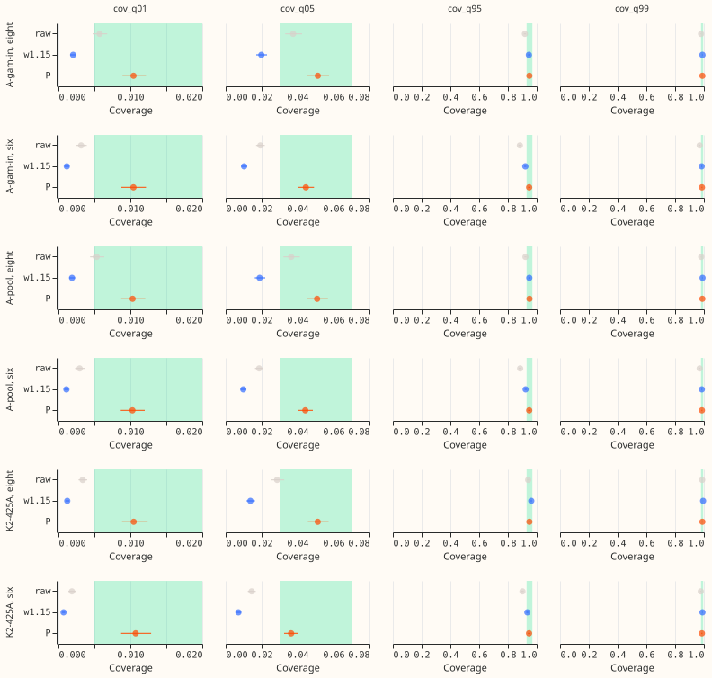
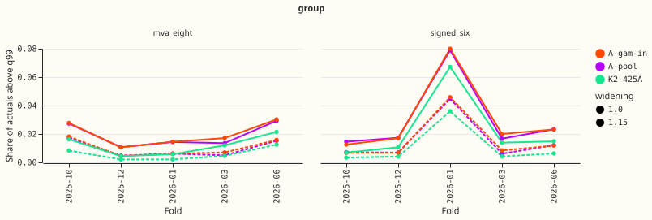
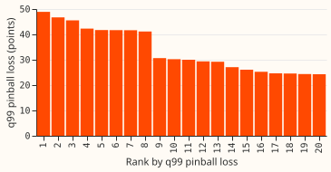
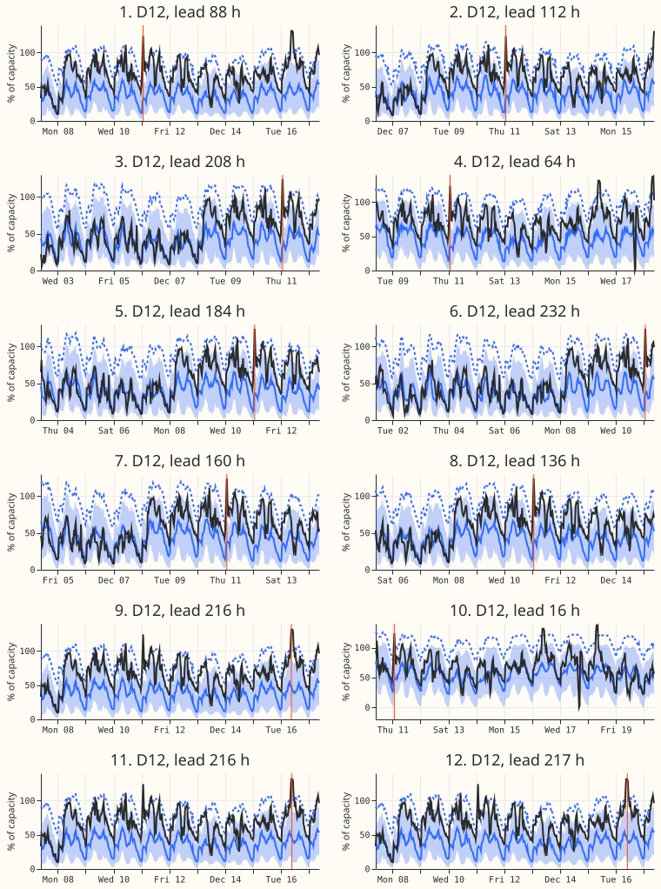

Does a widening or table P make the tails of the first-release demand candidates honest?
The candidates' bands are too narrow on the upper tail, and widening only that tail fixes the eight. The bands of A-pool and A-gam-in (the first-release demand candidates of experiment 470) are too wide on the lower tail and too narrow on the upper tail. A widening of both tails by 1.15 (every tail quantile's distance from the median times 1.15) therefore repairs the upper tail while it damages the lower one. Widening only the upper tail brings the eight into range as well. Table P, which multiplies each tail quantile's distance from the median by its own factor, brings all four tails into range at the eight MVA-only Primaries, for both candidates. It does not at the signed-MW six, where it misses by a narrow margin, and cold winter nights stay under-covered at the six. Experiment 435 found that table P failed on clean rows, but it recalibrated a different forecaster (experiment 428's arm R-inj, whose raw q95 was 0.851 at the six and 0.904 at the eight), so the two results are not a like-for-like contradiction. Table P passes at the eight here. Its factors are fitted on the other four folds, including folds later in time than the one scored, so its coverage is optimistic. The strict fit, which uses earlier folds only, is the figure to plan on.
Terms.
- The eight and the six: the eight Primary substations whose telemetry is in MVA, and the six whose telemetry is in signed MW. They are scored separately. D15 and D18 are two further Primaries with a short history, reported but never judged.
- A-pool, A-gam-in, K2-425A: the demand forecasters of experiment 470. A-pool averages five seeds of experiment 425's arm A. A-gam-in adds a generalised additive model input and exists for the eight only. K2-425A is a variant of A-pool that experiment 470 found worse at q99.
- Table P: a factor, per metering group, lead band, and tail, on each tail quantile's distance from the median. A lead band is a range of hours ahead, such as 12 to 36 hours.
- NRA-corrected actuals: actuals with the effect of a load shift removed, giving the power on
the normal running arrangement (NRA). BG2 is the best-guess demand forecaster of experiment
425's series, and
manual_heuristicis NGED's rule. In the curtailment rows, f is the fraction of the node's past maximum export used as the limit.
Question and answer. The question was whether a widening, rather than table P, makes the tails honest. The prior from experiment 435 was that a widening would. The answer is no at the eight: the widening misses the q05 and q01 floors. The experiment narrows the first release's recalibration choice to table P at the eight and leaves the six open.

Figure 1 shows coverage with 95% intervals against the target ranges (green).

Figure 2 shows how often actuals exceed q99, raw and widened, by fold.

Figure 3 ranks the 20 worst half-hours of A-pool (widened) by q99 pinball loss.

Figure 4 shows the 12 worst of those half-hours, each as the forecast from its origin with the target half-hour marked in orange.
Arms, rows, and method
- Arms: A-pool (experiment 425's arm A, five seeds averaged), A-gam-in (the eight only), and
K2-425A (the eight and D15/D18; three cells averaged in quantile space). Variants:
raw,w1.15(distance of the four tail quantiles from the median times 1.15), andP(table P, fitted on the clean rows of the other four folds, one factor per group, lead band, and tail). The sweep 1.05 and 1.10 is infree_tails.parquet. - Rows: the
gam14set of experiment 470 plus D15 and D18 (report-only). Folds: 2025-10, 2025-12, 2026-01, 2026-03, 2026-06; July 2026 is unused. Flagged exact-zero half-hours are dropped (inherited from experiment 470's scoring context). The experiment 399 start cut for D15 and D18 is inherited from experiment 470's rows. - Actuals: rejoined from experiment 470's scoring context. "Rows with no labelled event" are
cls == "clean". NGED's event labels are incomplete, so these rows may hold unlabelled events. - Intervals: month-by-origin-day block bootstrap, 20,000 resamples. The Bonferroni count is 10 (8 contrasts of table P minus the widening, on CRPS and q99 pinball loss, each for 4 combinations of group and candidate; plus 2 contrasts of K2-425A minus A-pool at q99 pinball loss, raw and widened).
- Minimum detectable effect (A-pool five single seeds, 1.15 widening): at the eight, CRPS 0.044 points, q95 coverage 0.010, q99 coverage 0.003, and q99 pinball loss 0.0095 points; at the six, CRPS 0.087 points, q95 coverage 0.014, q99 coverage 0.008, and q99 pinball loss 0.018 points.
- Limits on the claims: (1) The raw lower tail at the eight (q05 0.036, q01 0.005) is already inside its target range, so only a widening of both tails breaks it. The upper-tail widening above is as good as table P at the eight, so table P is needed only at the six. (2) The K2-425A contrast after table P (+0.002) has no interval, because only the raw and widened contrasts were counted. (3) Table P's pooled coverage hides fold-level misses: for A-pool at the eight, 2025-10 has q05 0.072 and q99 0.979, and 2025-12 has q05 0.027 and q95 0.966. (4) Table P's CRPS gain over the widening (0.004 points) is a tenth of the minimum detectable effect (0.044), and the six's q99 pinball difference (0.011) is below its minimum detectable effect (0.018). At the six, the Bonferroni interval for that difference spans about 4.8% to 7.4%. (5) The 20 worst half-hours are 20 rows in one fold, probably one event; the 2025-12 fold's raw exceedance share is the lowest of the five. (6) Curtailment intervals are wide: no candidate variant is distinguishable from BG2, and table P at f = 0.9 (1.79) is above BG2 (1.37).
- Selection bias: every score is selection-biased, because the same five folds choose the candidates and score them.
- Cadence: the stored forecasts come from monthly refits. This experiment fits only table P's factors.
- Reused code: experiment 435 (
e00435_table_p_provisional,e00435_tailcore), experiment 470 (e00470_score,e00470_build,e00470_curtailment), and experiments 449 and 454 through them.
Results (clean rows, points of effective capacity; coverage is a fraction)
| Group | Candidate | Variant | q01 | q05 | q95 | q99 | q99 pinball | CRPS |
|---|---|---|---|---|---|---|---|---|
| eight | A-pool | raw | 0.0053 | 0.0364 | 0.9216 | 0.9812 | 0.238 | 4.244 |
| eight | A-pool | w1.15 | 0.0019 | 0.0189 | 0.9487 | 0.9906 | 0.235 | 4.246 |
| eight | A-pool | P | 0.0103 | 0.0509 | 0.9498 | 0.9894 | 0.236 | 4.242 |
| eight | A-gam-in | raw | 0.0057 | 0.0376 | 0.9179 | 0.9802 | 0.236 | 4.200 |
| eight | A-gam-in | w1.15 | 0.0020 | 0.0199 | 0.9459 | 0.9899 | 0.231 | 4.202 |
| eight | A-gam-in | P | 0.0104 | 0.0512 | 0.9494 | 0.9895 | 0.233 | 4.198 |
| eight | K2-425A | raw | 0.0034 | 0.0286 | 0.9404 | 0.9881 | 0.236 | 4.132 |
| eight | K2-425A | w1.15 | 0.0012 | 0.0138 | 0.9625 | 0.9941 | 0.246 | 4.140 |
| eight | K2-425A | P | 0.0105 | 0.0512 | 0.9493 | 0.9893 | 0.238 | 4.131 |
| six | A-pool | raw | 0.0030 | 0.0186 | 0.8851 | 0.9708 | 0.195 | 3.451 |
| six | A-pool | w1.15 | 0.0011 | 0.0098 | 0.9232 | 0.9853 | 0.181 | 3.451 |
| six | A-pool | P | 0.0103 | 0.0443 | 0.9479 | 0.9863 | 0.192 | 3.443 |
Targets: q01 0.005 to 0.02, q05 0.03 to 0.07, q95 0.93 to 0.97, q99 0.98 to 0.995. The eight has 482,895 rows and the six 323,235 rows per candidate.
- Decision rule at the eight: A-pool and A-gam-in pass with table P. CRPS is 0.004 and 0.003 points better than with the widening (A-pool: -0.0038, Bonferroni interval -0.0054 to -0.0021), and q99 pinball loss is +0.0009 (-0.0012 to 0.0035) and +0.0014 (-0.0003 to 0.0036), which is under 1% and well under the 5% limit.
- Decision rule at the six (A-pool): the four coverages pass, but q99 pinball loss is +0.0110 (0.0087 to 0.0135) against the widening, which is +6.1% and above the 5% limit. The six fails the pinball-loss clause.
- Widening the upper tail only (q95 and q99 distance from the median times 1.15): at the eight, A-pool gives q01 0.005, q05 0.036, q95 0.949, q99 0.991, q99 pinball loss 0.235, and CRPS 4.243, and A-gam-in gives q95 0.946, q99 0.990, and q05 0.038. Both are inside every target range, so this widening passes the decision rule at the eight as table P does. At the six it gives q95 0.923 (below the 0.93 floor) and q05 0.019 (below its 0.03 floor), so the six needs table P's lower-tail narrowing as well, and table P lifts q05 to 0.044.
- K2-425A's q99 failure: the widening raises K2-425A's q99 pinball loss. Against A-pool, K2-425A is -0.0022 (-0.0145 to 0.0074) raw, +0.0110 (0.0021 to 0.0177) widened, and about +0.002 after table P (0.238 against 0.236). Table P repairs K2-425A's q99 loss. K2-425A's raw q95 coverage (0.940) is already inside the target range, so a 1.15 widening moves it to the top of that range (0.963) and pushes q05 to 0.014 and q01 to 0.001, below their floors.
- Strict earlier-only fit (each scored fold is fitted on the folds before it, so 2025-10 is never scored): A-pool at the eight gives q05 0.045, q95 0.949, q99 0.992, and q99 pinball loss +0.9% against the widening, which still passes. At the six it gives q95 0.927 and q99 pinball loss +6.2%, which fails, as experiment 435 found. The leave-one-fold-out figures above are therefore optimistic.
- Cold winter nights (rows with no labelled event): at the eight, A-pool q95 rises from 0.874 raw to 0.929 with table P and 0.940 with the cold-night class (q05 0.049, q01 0.033, so the lower tail overshoots its 0.02 ceiling). At the six, q95 rises from 0.835 to 0.904 and 0.919, and q99 stays at 0.972, below the 0.98 floor. The gap at the six is reported and no fix is added.
- D15 and D18 (report-only, A-pool): raw q95 is 0.908; the widening gives 0.949 but q05 0.005; table P gives q95 0.918 and q05 0.023.
- Christmas week: raw q95 coverage (A-pool) is 0.963 at the eight and 0.931 at the six. Table P raises the eight's coverage to 0.986, above the 0.97 ceiling, and the cold-night class changes nothing, so the table over-widens that week.
- Real-event rows (NRA-corrected actuals): A-pool coverage is poor whatever the recalibration (eight: q95 0.856, q99 0.887; six: q01 0.513), so no recalibration here repairs event rows.
- Tails by fold: the share of actuals above q99 for A-pool raw at the eight runs 0.011 to 0.029 per fold and at the six 0.015 to 0.079 (2026-01), against a target of 0.01. All of the 20 worst q99 half-hours at the eight (A-pool, widened) fall in 2025-12, so that fold alone drives the worst cases.
- Curtailment cost at the signed-MW six (£ million over the scored rows; lower is better; 95%
interval): at f = 0.9, raw 2.18 (0.19 to 5.79), widened 1.89, table P 1.79, against BG2 1.37 and
manual_heuristic2.02. At f = 0.75: 8.63, 7.05, 6.81, BG2 8.24,manual_heuristic12.88. At f = 0.5: 24.10, 21.63, 21.75, BG2 25.92,manual_heuristic37.79. Table P minus raw is -0.39 (-1.04 to -0.01) at f = 0.9 and -2.35 (-6.58 to +0.85) at f = 0.5.
Checks
- Audit triggers: the result contradicts experiment 435 (table P failed there) and parts of the prediction, and the explanation tested is the fit (leave-one-fold-out against earlier-only, above). The maintainer's choice of first-release candidate also depends on this result. A comparison with the mean forecast was not made, because the stored forecasts hold quantiles only. A fresh Sonnet audit (briefed with the PR number alone) confirmed that the fit uses none of the scored fold's actuals, that the row sets are identical, that clean rows hold no real-event rows, and that the six's +6.05% is correct. Three findings: the folds are origin months and targets run up to 10 days ahead, so 5% of 2025-12 half-hours also sit in 2026-01 (dropping them from the fit moves q95 by at most 0.0004); the six's +6% differs by fold (+1.6% to +9.0%) and by Primary (-0.4% to +13.9%); and experiment 435 recalibrated a weaker forecaster, so it is not a contradiction. The audit also asked for the upper-tail widening, which is the new bullet above.
- Prediction outcome: P1 held. P2 held (table P matches the best widening on q95: 0.950 against 0.949, and an upper-tail widening matches it on every tail at the eight). P3 held for the six and failed for the eight (the cold class lifts cold-night q95 to 0.940). P4 failed (table P repairs K2-425A's q99 loss; the 1.15 widening of both tails does not). P5 held for q95 (D15/D18 stay under 0.93 after table P).
Caveats and next steps
- Caveats: the leave-one-fold-out fit uses later folds; the strict fit is the planning figure. Five non-contiguous folds are few, and the 2025-12 fold dominates the worst half-hours. NGED's event labels are incomplete. K2-425A averages three cells in quantile space, so its numbers differ slightly from experiment 470's mean of per-cell scores.
- Open options: fitting table P on all five folds for the eight, and scoring July 2026 once the maintainer chooses the candidate. For the six, a smaller upper-tail factor or a per-Primary variant is untested.